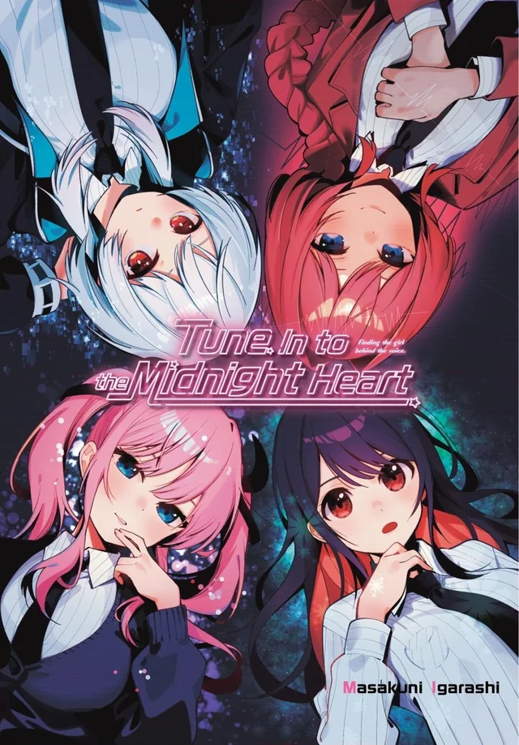
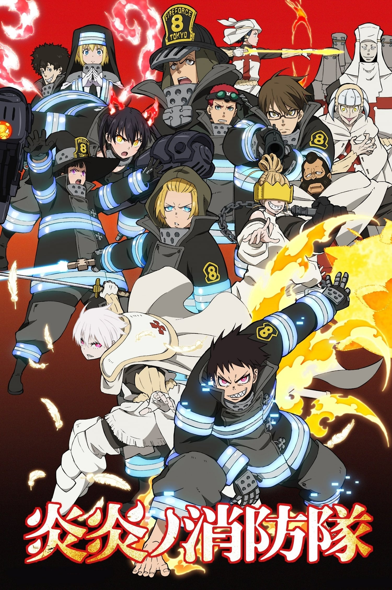
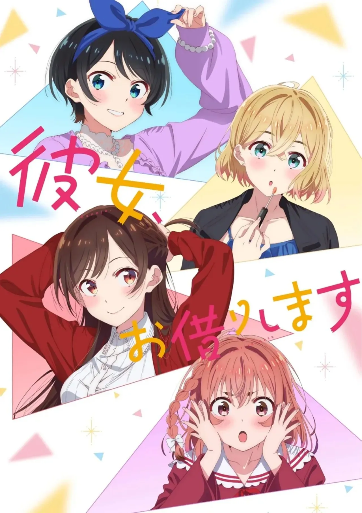
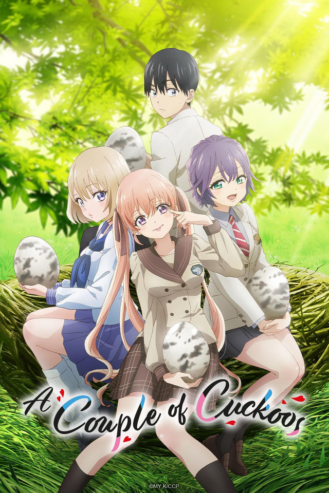
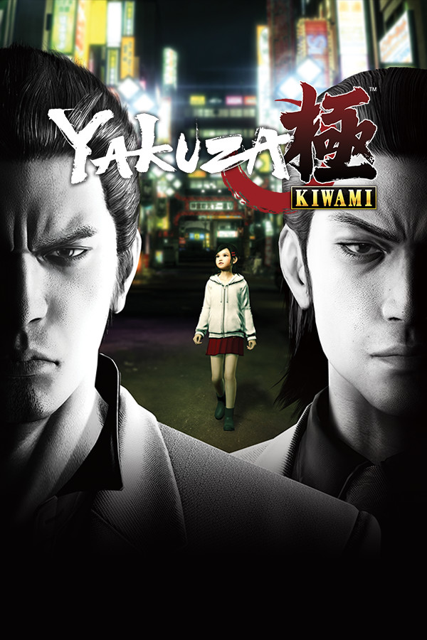

LVL.3

MiguelitoBFMV
35 xp to Lvl. 4
MiguelitoBFMV
35 xp to Lvl. 4
Días de inactividad
La emisión del anime, retomalo para completar la serie.
CompletionEps. 3/12
Planet Novalis
88%
Episode 1071/1156 (Currently)
85%
Cha.16/129 - Vol.2/28 (Currently Monthly)
15%
Abroad in Japan - 51 min left
Abroad in Japan - 52 min left
Abroad in Japan - 51 min left

Mayonaka Heart Tune
3 months inactive

Enen no Shouboutai
Not watch yet

Kanojo Okarishimasu
2 months inactive

Kakkou no Iinazuke
2 months inactive

Yakuza Kiwami
1 month inactive

Stellar Blade
1 year inactive
Your Latest Milestones
Trophy Earned: "Perfectionist"
Yakuza 0 Director's Cut
2 hours agoFinished Chapter 32
Shangri-la Frontier
YesterdayWatched Ep.12: "In Rikka's Front Row"
Mayonaka Heart Tune
2 days ago